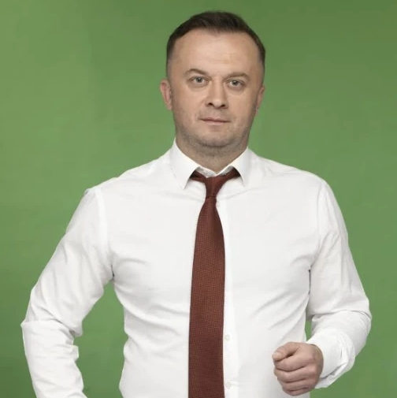

Хто такий - голова Димерської ОТГ Володимир Підкурганний ?
Народився 15 вересня 1981 року у Вишгороді Київської області. Проживає в с. Лютіж на Київщині. На даний час вчитель з правознавства Димерської ЗОШ І–ІІІ ст. №1 (Вишгородського району Київської області).
У 2004 році закінчив юридичний факультет Київського національного університету ім. Тараса Шевченка за спеціальністю «правознавство», кваліфікація – магістр права. У 2007–2010 роках навчався в Національній академії державного управління при Президентові України за спеціальністю «державне управління», кваліфікація – магістр.
Має двадцятирічний практичний досвід у галузі юриспруденції та державного управління.
З 2000 року працював юристом у КСП «Україна».
2005–2008 – провідний та головний спеціаліст відділу обліку суддівських кадрів Державної судової адміністрації України. Потім – головний спеціаліст Департаменту кадрової роботи та державної служби Міністерства юстиції України. З 2009 року – головний спеціаліст Департаменту законодавства з правосуддя, правоохоронної діяльності та антикорупційної політики Мінюсту.
З серпня 2010 року по жовтень 2018 року – суддя Вишгородського районного суду Київської області.
З листопада 2018 року по червень 2019 року – радник голови Вишгородської райради.
Був офіційним спостерігачем громадської організації «Слуга Народу» на президентських виборах 2019 року по 96-му округу. Довірена особа політичної партії «Слуга Народу» по 96-му виборчому округу на дострокових виборах 2019 року до Верховної Ради.
«Дитинство і юність прожив у селищі Димер, яке є для мене рідним, тому я і небайдужий щодо його майбутнього. Вибори – це доля людей, сімей, населених пунктів, громади вже завтра! Особисто для мене це велика відповідальність перед кожним мешканцем усіх 34 населених пунктів майбутньої Димерської ОТГ», – каже представник команди Олександра Дубінського Володимир Підкурганний.
Він переконаний, що кожен має право на безпеку в тому селі, де він проживає; на чисту воду в достатній кількості у своїй домівці; на освітлену вулицю в темний час доби; на рівний асфальт хоча б на основних вулицях і площах; на сучасні місця для відпочинку та занять спортом як дітей, так і для дорослих; на достойний рівень середньої освіти та медицини.
«Власним прикладом із підтримкою сформованої команди однодумців прагну до об’єднання людей навколо кращого майбутнього нашого рідного краю. Хочу запевнити вас, що зміни на краще можливі, і вони обов’язково будуть. Давайте разом працювати і жити як одна родина!» – закликає майбутній кандидат на посаду голови Димерської ОТГ від «Слуги Народу» Володимир Підкурганний.
Відкриті джерела інформації з Інтернету:Зе Команда Київщина